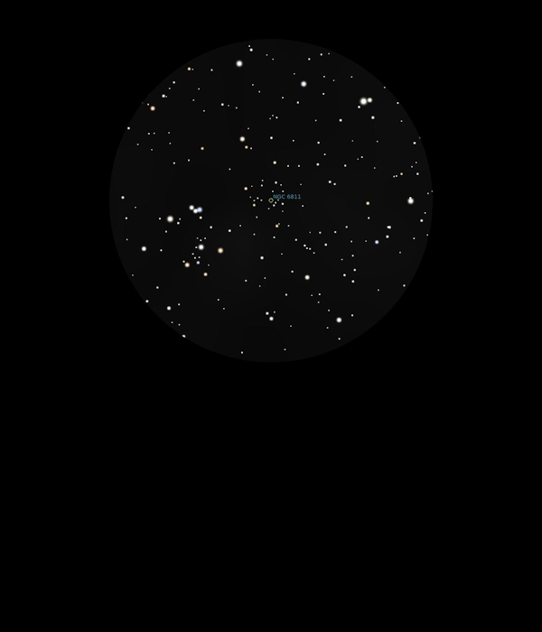

NGC 6811
Open Cluster in Cygnus
NGC 6811
Mag 6.8
The Hole in the Cluster
30/08/16
Not really apparent where it gets it's name, rather ragged and
sparse
However it sits in a marvelous 25mm FOV with a beautiful
cluster to it's north, or is this the cluster itself and
Stellarium has it at the wrong co-ordinates?